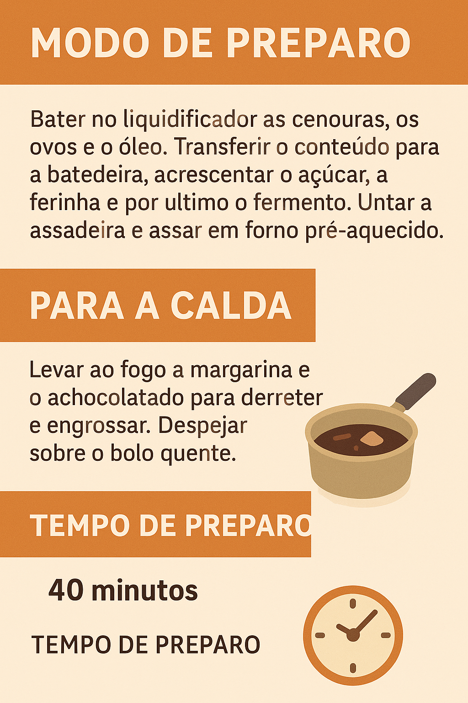

Como Fazer um Bolo de Cenoura Perfeito
Seja bem-vindo(a) ao nosso curso rápido sobre como fazer um bolo de cenoura macio, saboroso e irresistível!
Vamos muito além da receita: você vai entender cada etapa do preparo, os segredos para um bolo fofinho, e como criar uma cobertura de chocolate perfeita.
Mesmo que você nunca tenha feito um bolo antes, este curso foi pensado para te guiar de maneira simples, prática e divertida.
Ao final, você será capaz de preparar um bolo de cenoura delicioso, digno de elogios — seja para a família, para vender ou apenas para se deliciar.
Juntos vamos transformar ingredientes simples em um doce inesquecível!
Receita
Ingredientes
Cobertura

Quiz de Fixação
Atividade
Material de Apoio
Para finalizar o seu aprendizado, baixe o material de apoio que preparamos para você!
📄 Baixar Material de Apoio